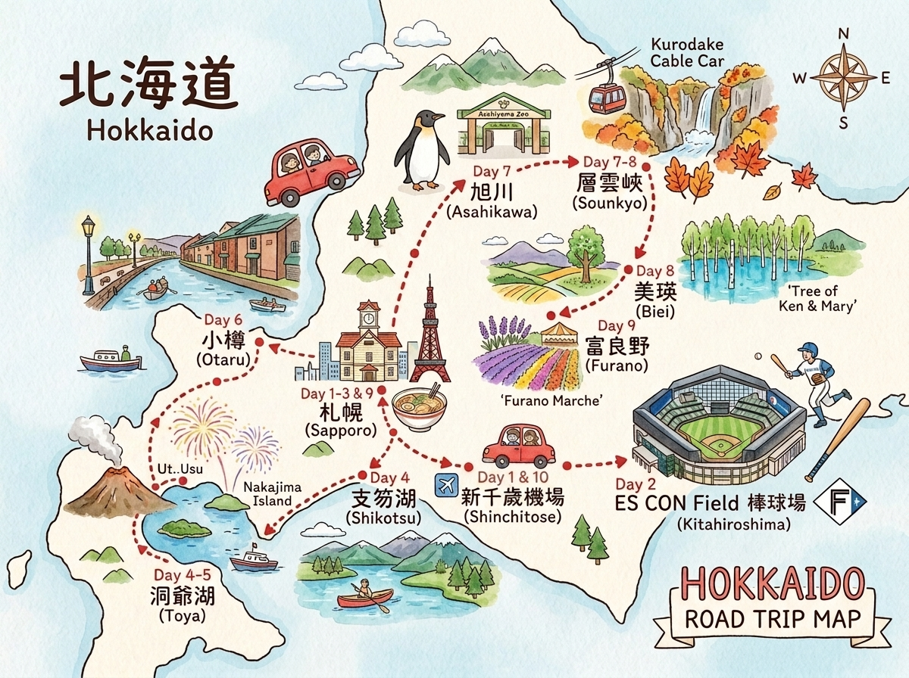

🎨 卡通手繪風格路線圖（中日雙語標記）｜自駕自助手冊專屬
| 日期 | 地點 | 晚數 | 建議旅館 |
|---|---|---|---|
| 7/31・8/1・8/2 | 札幌 | 3晚 | JR Inn / Cross Hotel / Richmond |
| 8/3・8/4 | 洞爺湖溫泉 | 2晚 | 湖畔亭 / 望羊蹄 / Toya Manseikaku |
| 8/5 | 小樽 | 1晚 | ドーミーイン小樽 / Vessel Hotel Campana Otaru |
| 8/6 | 層雲峽溫泉 | 1晚 | 層雲峽観光ホテル / 朝陽リゾートホテル |
| 8/7 | 美瑛 | 1晚 | Biei Potato Village / 白金温泉旅館 |
| 8/8 | 札幌 | 1晚 | Art Hotel / JR Inn 札幌 |
| 類型 | 設施 | 日期 | 費用參考 |
|---|---|---|---|
| 🐻 動物園 | 圓山動物園（札幌） | 8/2 | ¥600/大人・¥300/小孩 |
| 🦁 動物園 | 旭山動物園（旭川） | 8/6 | ¥1,000/大人・免費/小學生 |
| 🐬 水族館 | 小樽水族館 | 8/5 | ¥1,800/大人・¥700/小學生 |
| 🏞️ 國家公園 | 支笏洞爺（支笏湖） | 8/3 | 獨木舟¥5,000–7,000/人 |
| 🏔️ 國家公園 | 大雪山（層雲峽） | 8/6–8/7 | 纜車¥2,000/大人 |
| ⚾ 球場 | ES CON Field | 8/1（已預訂） | — |
支笏湖獨木舟
夏季快滿，出發前 2–3 週務必預約
台灣駕照
需附日文翻譯本（非國際駕照），在台辦理
層雲峽纜車
天氣不好時停開，行程需彈性備案
日本 eSIM
提前買好，全程靠 Google Maps 導航
Farm Tomita
薰衣草盛期為 7 月中，8 月上旬可能已凋
JR 指定席
新千歲↔札幌・旺季提前購票
洞爺湖煙火
每晚 20:45，住湖畔旅館才能輕鬆欣賞
旭山動物園
旺季 8 月開到 17:15，建議 09:30 入園
| 項目 | 估算（台幣） |
|---|---|
| 住宿（10晚，含溫泉旅館） | NT$70,000–90,000 |
| 租車 6天（含燃油・高速） | NT$15,000–18,000 |
| 飲食（10天） | NT$30,000–40,000 |
| 門票（動物園・水族館・纜車等） | NT$10,000–13,000 |
| JR・巴士交通 | NT$5,000–7,000 |
| 購物・伴手禮 | 依個人預算 |